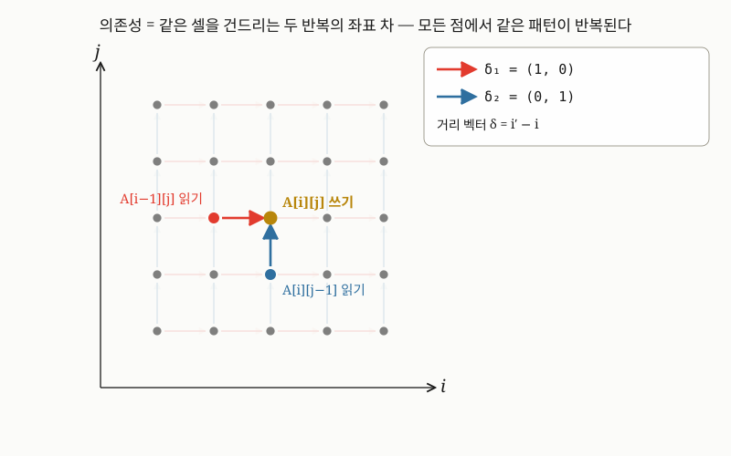
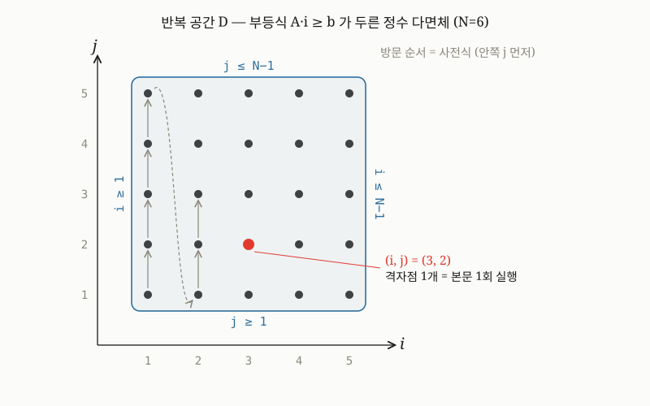
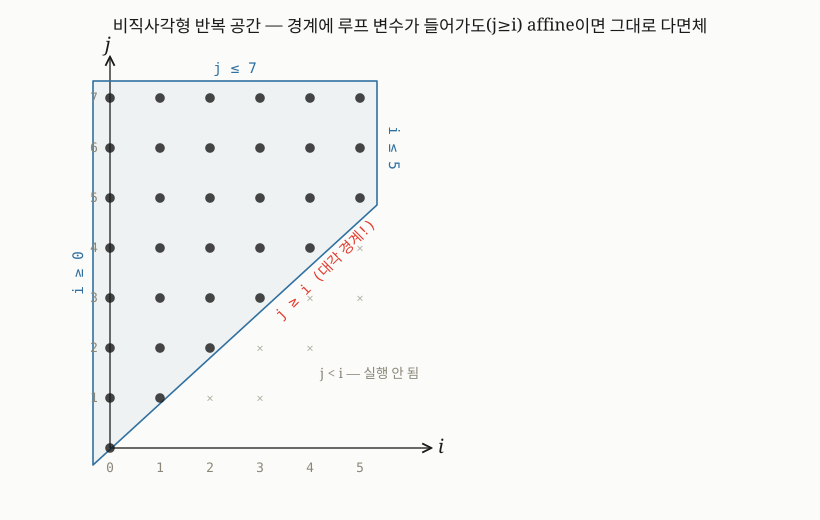
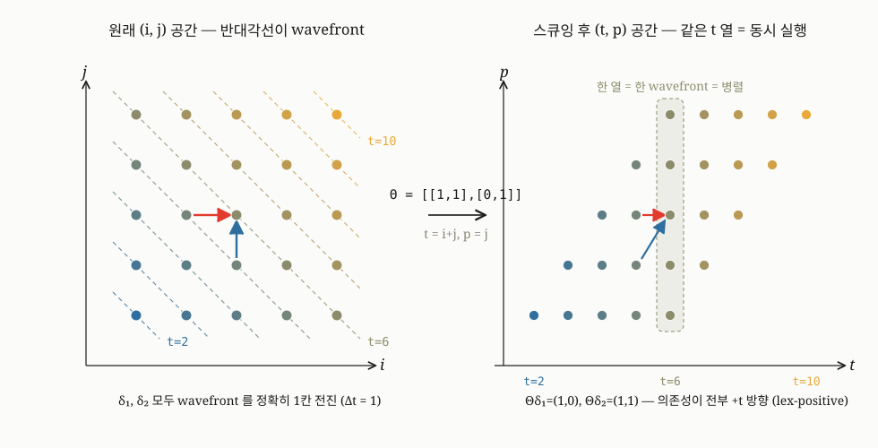
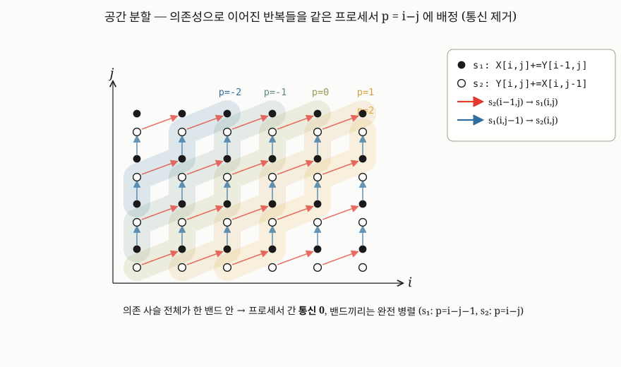
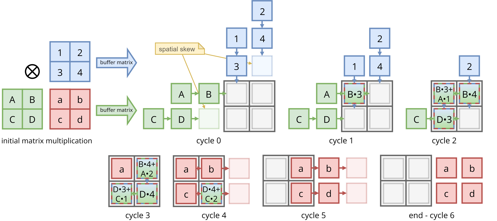

MLIR · Polyhedral / Affine
청중: 컴퓨터 아키텍처 연구자 / HW 개발자 / 서버레벨 SW 엔지니어
오늘의 흐름 — 두 주제가 affine에서 만난다
- 도입 — 왜 컴파일러는 여러 IR 단계를 거치는가
- 탄생 배경 — Moore 법칙의 종말과 두 MLIR 논문
- 핵심 개념 — 모든 것이 Operation · Dialect · Region
- 설계 철학 — Parsimony · Traceability · Progressivity
- Progressive Lowering — 추상화 계단을 한 칸씩
- Polyhedral 모델 — 루프를 수학으로 (주제 2)
- Affine 변환 — 스케줄을 바꾸면 병렬성이 생긴다
- 종합 — 한계와 ISA 경계 = 책임 분담선
- 에필로그 — 창시자의 2025년 회고 (Democratizing AI Compute)
도입 — 왜 컴파일러는 여러 IR 단계를 거치는가
소스코드에서 기계어까지: 한 번에 번역하지 않는다
직관: "번역기 하나가 소스를 받아 기계어를 뱉는다". 현실: 거의 항상 그렇지 않다.
- 사람이 읽는 소스(C · Swift · Python · ML 그래프) → 기계가 실행하는 명령(x86/Arm · GPU SASS · NPU 마이크로코드)
- 그 사이에 여러 개의 중간 표현(IR, Intermediate Representation)을 차례로 거친다
- IR = 소스도 최종 기계어도 아닌, 컴파일러 내부에서 프로그램을 들고 다니는 중간 형태
- 소스를 IR로 옮긴 뒤 IR 위에서 분석·최적화하고, 점점 더 낮은 IR로 바꿔 가다 마지막에 기계어를 낸다
IR은 단계 사이의 "계약"이다 — ISA 비유
ISA는 SW와 HW 사이의 계약(contract) — 양쪽이 독립적으로 진화한다. IR은 컴파일러 내부에서 같은 역할.
- 분석(analysis): IR은 기계가 추론하기 좋으라고 만든 형태. 예: SSA — 모든 변수에 값이 딱 한 번만 대입 → 값의 흐름을 기계적으로 추적
- 최적화(optimization): 죽은 코드 제거·공통식 제거·루프 변환을 IR 위에서. 같은 패스를 여러 입력 언어가 공유
- 이식성(portability): 언어 $N$개 · 타깃 $M$개라도 가운데 공통 IR을 두면 $N\times M$개 번역기가 필요 없다

하나의 IR로는 부족하다 — premature lowering
LLVM IR은 대략 "벡터가 붙은 C(C with vectors)" 수준의 단일 추상화 레벨 표현이다 [2].
- 스칼라·포인터·기본 제어흐름엔 탁월. 하지만 그보다 높은 의미(이건 행렬 곱이다 / 7중 루프 둥지다 / 텐서 메모리 레이아웃은 이렇다)는 LLVM IR로 내려오는 순간 사라진다
- 고수준 의미가 너무 일찍 사라지면, 정작 그 의미가 필요한 최적화가 정보를 복원하느라 고생한다
- 논문은 이 복원을 fragile · expensive · invasive(깨지기 쉽고 · 비싸고 · 침습적)하다고 못 박는다 [2 §I]
- premature lowering(성급한 하강) — 의미를 필요 이상으로 빨리 낮은 추상으로 떨어뜨리는 것 = 근본 골칫거리 [1][2]
진짜 문제: 컴파일러 동물원(fragmentation)
단계가 여러 개 필요하다는 데는 모두 동의했다. 그런데 각 진영이 그 단계들을 처음부터 따로 다시 만들었다.
- Swift · Rust · Julia · Fortran — 저마다 자기만의 고수준 IR [2]
- TensorFlow · PyTorch · JAX — 저마다 자기 "ML graph" 표현 [2]
- 각 IR마다 분석·최적화 패스, 검증기, 직렬화 포맷, 디버깅 도구를 또 따로
- Lattner 외는 이를 산업적 fragmentation(파편화)로 진단 — 인프라·도메인 지식이 팀 단위로 갇힌다 [2 §I]
사용자가 실제로 겪는 증상
파편화는 추상적 미감의 문제가 아니라 사용자에게 직접 보이는 결함으로 나타난다 [2 §I].
- 알아먹기 힘든 에러 메시지 (poor error messages)
- 흔치 않은 경우(edge case)에서의 실패 (failures in edge cases)
- 예측 불가능한 성능 (unpredictable performance)
- 새 하드웨어로 스택을 일반화하기 어려움 (difficulty generalizing the stack to new hardware)
이 섹션이 심는 질문
옳은 직관 "하나의 IR로는 부족하다"가, 잘못된 결과 "그러니 각자 자기 컴파일러 동물원을 짓자"로 굳었다.
- 컴파일러가 여러 IR 단계를 거치는 데는 정당한 이유가 있다 — 분석·최적화·이식성, 그리고 premature lowering 회피
- 문제는 그 단계들을 모두가 따로따로 다시 만들었다는 것
MLIR 탄생 배경 — Moore 법칙의 종말과 두 논문
한 work, 두 제목 — 같은 저자·같은 내용, 다른 강조
MLIR(Multi-Level IR, 다층 중간표현) 논문은 하나의 작업이 두 가지 프레이밍으로 발표됐다.
- 같은 저자·같은 내용이지만 강조점이 다르다 — 동기 vs 방법
- 이 발표의 직접 인용은 CGO 정본 [2]을 기준으로 삼는다
| 프레이밍 | 앞세우는 것 | |
|---|---|---|
| arXiv [1] | …for the End of Moore's Law | 왜 지금 — 시대적 동기 |
| CGO 2021 [2] | Scaling …for Domain Specific Computation | 무엇을 어떻게 — 도메인 특화 확장 |
큰 그림 — 하드웨어 트렌드 전환이 파편화를 낳았다
- Moore 법칙 둔화 — 같은 면적에 트랜지스터 더 넣기가 어려워졌다
- Dennard scaling 종료 — 전력 밀도가 안 줄어 클럭을 못 올린다(전력·발열 벽)
- → 범용 CPU 단일코어 성능 정체 → DSA(Domain-Specific Architecture)로
- Hennessy·Patterson: "컴퓨터 아키텍처의 새로운 황금기" [3] — TPU·텐서코어·NPU·DSP
- 가속기마다 자기 컴파일러 — 메모리 계층·자원 모델·코드생성 규칙이 칩마다 다르다
- 각 팀이 IR·최적화 패스를 백지에서 다시 → 생태계 fragmentation(파편화)

저자들의 진단 — 다섯 가지 고통(5 pain points) [2 §I]
| # | Pain point | 무엇이 문제인가 |
|---|---|---|
| 1 | One-size-fits-all IR | 단일 추상 레벨 IR(LLVM IR = "C with vectors")은 그보다 높/낮은 분석에 부적합 |
| 2 | N개 컴파일러 중복 | Swift·Rust·Julia·Fortran·ML 프레임워크가 각자 high-level IR — 같은 바퀴를 N번 재발명 |
| 3 | 사용자에게 보이는 결함 | 빈약한 에러 메시지·엣지케이스 실패·예측 불가 성능·새 HW 일반화 곤란 |
| 4 | Premature lowering | 고수준 의미가 너무 일찍 소멸 → 복원이 fragile·expensive·invasive |
| 5 | 이질 가속기 컴파일 | 동질적 LLVM 컴파일과 달리 칩마다 코드생성·자원 모델·메모리 계층이 고유 |
왜 "single abstraction level"이 문제인가 — 메모리 한 층 비유
추상화 레벨이 하나뿐인 IR ≈ 메모리 계층이 단 한 층뿐인 컴퓨터.
- 캐시 없이 메인 메모리 한 층만 — 동작은 하지만 지역성 정보를 둘 자리가 없다
- 모든 접근이 같은 층 → 빠르게 만들 여지를 구조적으로 못 가진다
- LLVM IR 한 층: "행렬 곱"·"affine 루프 중첩"·"텐서 shape" 같은 고수준 의미를 담을 자리 없음
- 그래서 의미가 초반에 잘게 풀려 사라지고 → 최적화기가 명령어 더미에서 역추론
- 이게 곧 pain #4 premature lowering이며 #1과 직결된다
경제적 동기 + 핵심 자세 — "하나의 진정한 IR 인프라"
저자들은 이 문제를 학술적이기보다 경제적으로 솔직하게 인정한다 [2 §I.B].
- N개 개선 컴파일러를 각각 구현할 여력이 없다 → 더 일반적 해법(고품질 인프라)에 투자
- 칩마다 펌웨어/드라이버를 백지에서 짜는 대신 공통 HAL에 투자하는 사고방식
- one true IR은 불가능 — 도메인마다 필요한 추상이 다르다
- 대신 여러 IR(dialect)을 정의·함께 굴리는 하나의 인프라를 만들자 [1][2]
채택 증거 — 논문 시점에 이미 모멘텀이 있었다 [2 §IV·§V]
정량 벤치마크가 아니라 실제 채택 사례를 evaluation으로 내세운 점이 흥미롭다.
- "좋은 아이디어"를 넘어 공통 인프라를 갈망하던 생태계 수요에 정확히 적중
- 파편화의 고통이 그만큼 실재했다는 방증
- 오늘날 TensorFlow·OpenXLA/StableHLO [9]·LLVM Polly [10] 계열의 출발점
| 축 | 수치(논문 시점) |
|---|---|
| 학계 워크숍 | 16개 대학 + 4개 국립연구소 참여 |
| 산업 endorsement | 14개 다국적 기업 공식 지지 |
| 개발 중 dialect | 26개 이상이 이미 개발 중 |
| 인프라 교체 | 7개 프로젝트가 custom 인프라 → MLIR로 |
MLIR 핵심 개념 — 모든 것이 Operation이다
모든 것이 Operation이다
코어는 단 하나의 추상만 안다 — Operation.
- 함수도, 모듈도, 상수도, 루프도 전부 Operation이다.
- ISA 비유: 명령어는 수백 개지만 디코더가 보는 1차 단위는 하나의 instruction.
- 코어는 "이건 함수, 저건 명령어"를 구분하지 않는다 — 전부 같은 구조체를 공유.
- 새 개념을 추가할 때 코어를 건드릴 필요가 없다.
- 요약: 작은 코어 + 사용자가 확장하는 어휘(dialect).
Operation의 구성요소
Op 하나는 "입력 → 출력 + 부가정보"를 담는 작은 상자.
- opcode — 무엇을 하는지 (예:
addf= 부동소수점 덧셈) - operands — 입력으로 받는 값들 / results — 내보내는 값들
- attributes — 컴파일 타임 상수 정보 (런타임 operands와 구분)
- regions — 자기 안에 품는 하위 코드 블록 (중첩)
- traits — 자기 능력 선언 / location — 원래 소스의 어디서 왔는지
Dialect — 도메인별 어휘 묶음
코어가 "문법"이라면 dialect는 "어휘집". 같은 Operation 구조 위에 도메인마다 자기 단어를 정의.
- Dialect = 특정 도메인의 Op·Type·Attribute·Trait·Interface를 모은 네임스페이스 (user-extensible).
- 코드에서는 Op 이름의 점-접두사로 드러난다 —
affine.for,arith.addf(점 앞=dialect, 점 뒤=Op). - 입구(고수준):
stablehlo·tosa— ML 프레임워크 그래프 진입. - 중간:
linalg·affine·scf·arith·memref·func·vector— 최적화가 벌어지는 층. - 저수준:
llvm— LLVM 백엔드로 넘어가 기계어가 됨. - 큰 흐름: 고수준 의미 → 중간 루프 → 저수준 명령어.
Region & Block — 루프가 IR 그 자체다
Region = Op이 품는 Block들의 컨테이너. Block = Op 리스트 + 끝의 terminator.
- Op이 region을 품으면 Op 안에 또 Op들 → 중첩(nesting)이 가능.
- 계층은 재귀적: Operation → Region → Block → Operation.
- 그래서 루프·구조적 제어 흐름이 IR 그 자체로 명시된다.
- LLVM IR은 flat CFG — "여기 루프 있다"가 IR에 안 적혀 있어 그래프를 분석해 루프를 recover해야.
- MLIR은
affine.for가 region에 루프 본문을 담아 루프 구조를 처음부터 박아둔다.
Functional SSA + Block Arguments
SSA(정적 단일 배정) = 한 변수는 딱 한 번만 정의. 값의 출처가 유일해 분석이 쉽다.
- 전통적 SSA는 합류 지점에서 $\phi$(phi) 노드로 "어느 경로에서 왔느냐"를 표현.
- MLIR은 $\phi$를 없애고, terminator가 다음 블록(successor)의 block argument로 값을 직접 넘긴다.
- 블록도 함수처럼 매개변수(block argument)를 받고, 점프하는 terminator가 그 값을 채운다.
- 블록 간 점프를 "인자를 넘기는 호출"처럼 다룸 → 그래서 functional SSA.
- $\phi$의 암묵적 마법 대신 값의 출처가 인자 전달로 명시 → 더 읽기 쉽다.
Traits / Interfaces — Op이 자기 능력을 선언한다
Trait/Interface = Op이 "나는 이런 능력이 있다"고 붙이는 꼬리표. 패스는 Op이 뭔지 몰라도 꼬리표만 본다.
- 예:
IsCommutative,NoSideEffects,LoopLikeOpInterface. - 논문: "inverting the common approach" — 패스가 Op을 다 아는 게 아니라, Op이 능력을 declare하고 패스는 선언만 본다.
- "Ops가 passes보다 많으니, Op이 pass를 아는 편이 더 쉽다."
- DCE·CSE·canonicalization·inlining 같은 일반 패스가 dialect를 몰라도 작동.
- Isolated-from-Above = 위 스코프의 SSA 값을 못 끌어 쓰는 scope barrier (대표적으로 함수).
- use-def chain이 경계를 못 넘어 → 모듈을 멀티코어에서 동시 컴파일. LLVM의 whole-module chain과 대비.
한 함수 안에 여러 dialect가 공존한다
논문이 직접 "the most profound"(가장 심오한)라 부르는 특성 — 한 프로그램 안에 서로 다른 dialect의 Op이 섞여 산다.
- 한 함수에
func·affine·arith·memref가 충돌 없이 공존 — 곧 $A[i] = A[i] + B[i]$를 8번. arith는affine이 뭔지 몰라도 덧셈 최적화를,affine은arith를 몰라도 루프 변환을 적용.- 각 dialect는 자기 일만 알고, interface로 추상화된 한에서 서로의 내부를 몰라도 협업.
func.func @add_arrays(%A: memref<8xf32>, %B: memref<8xf32>) {
affine.for %i = 0 to 8 {
%a = affine.load %A[%i] : memref<8xf32>
%b = affine.load %B[%i] : memref<8xf32>
%s = arith.addf %a, %b : f32
affine.store %s, %A[%i] : memref<8xf32>
}
func.return
}Chris Lattner의 설계 철학 — 세 원칙
왜 "기법"이 아니라 "원칙"부터 보는가
대부분의 컴파일러 책은 기법(SSA · register allocation · loop tiling)을 가르친다. MLIR 논문은 특이하게 원칙에서 출발한다.
- 저자들(Chris Lattner — LLVM/Clang/Swift, MLIR 창시자 — 외)은 추상화 설계가 아직 잘 이해되지 않은 영역임을 솔직히 인정한다 [2]
- 그 공백을 메우려 세 가지 설계 원칙으로 모든 결정을 정당화한다
- MLIR은 누구나 자기 dialect를 추가하는 시스템 → 원칙은 코어 설계자만의 규약이 아니라 모든 확장 작성자의 가이드라인
- ISA 비유: ISA를 한 번 잘 정의하면 그 위에 수많은 구현이 일관되게 올라온다 — 원칙이 곧 생태계의 합의 규약
원칙 1 — Parsimony (절약, Occam의 면도날)
한 줄로: "코어는 최대한 작게, 나머지는 전부 속성으로 일반화하라."
- 전통 IR은 내장 개념이 많다 — function · module · instruction · phi · branch · switch · call · return, 각각 고유 타입·메서드
- MLIR은 정반대 — 모든 것이 Op(Operation): 함수
func.func· 모듈builtin.module· 상수arith.constant· 호출func.call - 코어는 단 하나의 추상 Operation만 알면 된다. 나머지는 Op + attribute + region + trait의 조합
- RISC 비유: 복잡한 CISC 명령 대신 소수의 단순 primitive로 모든 것을 조립
Parsimony의 핵심 기법 — "inverting"
코어가 작아도 일반 패스(DCE · CSE · canonicalization · inlining)는 작동해야 한다. 어떻게?
- Op이 "나는 교환법칙 성립(
IsCommutative)" · "부작용 없음(NoSideEffects)"이라 선언하면, 일반 패스는 그 선언만 보고 자동 작동 - LLVM의 길:
InstCombine·PeepholeOptimizer가 모든 opcode를 알아야 했다 → 새 연산마다 거대 패스를 손봐야 해 유지보수가 악명 높음 - MLIR의 길: Op이 자기 능력을 선언하고 패스는 그 선언만 본다 → 유지보수 부담이 거대 패스가 아니라 각 Op으로 분산 [2]
원칙 2 — Traceability (추적가능성)
핵심 동사 셋: retain / declare / verify (보존 · 선언 · 검증).
- (a) Retain — 정보를 복원하지 말고 보존하라. 모든 Op에 Location(소스 line:col, AST 노드)을 붙여 변환 내내 전파
- Location도 attribute의 한 종류 → Traceability를 Parsimony의 메커니즘으로 구현, 두 원칙이 드물게 공명
- (b) Declare — 변환을 명령형 코드가 아니라 선언적 규칙으로. 이름·입출력·속성·검증기를 TableGen(ODS)으로 선언 → C++ boilerplate 자동 생성
- (c) Verify — 불변식을 한 번 선언하면 매 패스 뒤 verifier가 자동으로 여러 곳에서 검증
Traceability의 동기 — WYSINWYX · Glassboxing
왜 추적가능성인가 — 디버깅을 넘어 보안·안전이 더 절실한 동기다.
- 다단계 컴파일에서 "최종 코드가 왜 이렇게 나왔나"는 종종 불가해 → Traceability는 최종 IR에서 원본을 역추적 가능하게
- WYSINWYX — "What You See Is Not What You eXecute": 소스의 보안 속성(상수 시간 비교 등)을 컴파일러 최적화가 깨버리는 실제 문제
- Traceability는 이런 변환을 감사(audit) 가능하게 만들어 소프트웨어 인증을 돕는다 [2]
- Glassboxing: OOP 캡슐화(blackbox, 숨김)와 정반대 — 내부 속성을 명시적으로 노출해 외부에서 질의(query) 가능
std::is_trivially_copyable<T> 같은 type trait처럼, Op이 LoopLikeOpInterface를 구현하면 LICM 패스가 그걸 질의해 자동 작동한다.원칙 3 — Progressivity (점진성)
슬로건이자 한 줄: "고수준 의미를 너무 빨리 잃지 마라. region 단위로, 수요에 따라 내려가라."
- 고수준 정보(텐서 shape · 루프 중첩 · affine 의존성 · 메모리 layout)는 분석·최적화의 핵심 재료. 일찍 사라지면 후속 분석은 역공학해야 한다
- 역공학은 fragile · expensive · invasive(깨지기 쉽고 · 분석 코드 비대 · 모든 패스를 다시 손봐야 함) [2]
- 실사례 Polly: LLVM 폴리헤드럴 최적화기는 LLVM IR이 일찍 지운 SCoP(정적 제어 영역)을 다시 검출해야 한다 → Progressivity는 애초에 구조를 IR에 보존
- MLIR 해법: region을 IR의 1급 시민으로 —
affine.for는 region을 가진 Op, 루프 구조가 분석 결과가 아니라 IR 그 자체
affine.for %i = 0 to %N {
affine.for %j = 0 to %M {
%v = affine.load %A[%i, %j] : memref<?x?xf32> // A[i][j]를 읽고
affine.store %v, %B[%i, %j] : memref<?x?xf32> // B[i][j]에 쓴다
}
}"the most profound" — dialect 혼합
저자들이 직접 가장 심오한(most profound) 특징이라 부른 것.
- 서로 다른 dialect의 Op이 한 프로그램 안에 공존 —
affine.for(고수준 루프) ·arith.addf(산술) ·llvm.call(저수준 ABI)이 같은 함수에 섞인다 - 한 dialect는 다른 dialect의 의미를 몰라도 (interface로 추상화된 한) 자기 변환을 적용한다
- 부분 변환(partial conversion): 패턴이 매칭되는 Op만 내리고 나머지는 그대로 둔다
원칙들의 충돌 — OSI 7계층 비유
발표에서 가장 강조하고 싶은 대목 — 저자들은 §II에서 원칙들이 서로 충돌한다고 직접 인정한다.
- OSI 7계층 비유: 7계층은 점진성(progressivity)의 모범(각 계층이 다음을 추상화)이지만 절약(parsimony)과는 정반대 — 7개 계층의 어휘를 모두 알아야 한다
- dialect를 늘릴수록 시스템 어휘가 늘어 parsimony가 깨지는 것과 똑같은 긴장
충돌 표 — 그리고 저자들의 정직함
MLIR은 자신을 완성된 답이 아니라 균형 잡힌 절충, 더 나아가 새 연구의 시작으로 자리매김한다.
| 충돌 쌍 | 충돌의 본질 | MLIR의 대처 | 근본 해소? |
|---|---|---|---|
| Progressivity $\leftrightarrow$ Parsimony | layer가 늘면 시스템 어휘가 늘어난다 (OSI 7계층 비유) | dialect는 opt-in, 일반 패스는 trait/interface로만 작동 | 부분만 |
| Traceability $\leftrightarrow$ 최적화 공격성 | 최적화는 본질적으로 정보를 버린다 (DCE/CSE/folding) | Location은 항상 보존, 나머지는 dialect가 결정 | 트레이드오프 |
| Parsimony $\leftrightarrow$ Expressiveness | 코어가 작으면 사용자가 직접 많이 정의 → 비호환 난립 위험 | 공통 dialect 표준 제공 + 거버넌스 | 사회적 문제, 미해소 |
| Traceability $\leftrightarrow$ Parsimony | 추적 정보가 메타 필드를 늘린다 | Location도 attribute 메커니즘에 흡수 | 공명 (해소) |
Progressive Lowering과 현대 컴파일러 파이프라인
MLIR은 결국 "한 번에 안 내려간다"
핵심 키워드 — progressive lowering(점진적 하강)
- IR(중간 표현) · dialect(추상화 수준별 op 묶음) · lowering(높은 추상화 → 기계에 가까운 표현)
- 고수준 의미를 단번에 기계어로 떨어뜨리지 않고 추상화 계단을 한 칸씩 내려간다
- 각 계단에서 그 계단에 맞는 분석·최적화를 끝낸 뒤 결과만 다음 계단으로 넘긴다
- 비유 — CISC 거대 명령 대신
micro-op으로 쪼개 단계 실행하는 것과 같다
한 dialect가 두 단계의 하강을 가진다
(1) 같은 dialect 안에서 더 원시적으로 vs (2) 다른 dialect로 완전 이전
- (1) 내부 lowering — 같은 dialect 머무름. 고수준 op을 fundamental op들로 풀어쓴다 (분석 영역 유지)
- 예:
--affine-expand-index-ops→ 결과물은 여전히 affine.*
한 dialect가 두 단계의 하강을 가진다 (계속)
// 입력: 평탄한 인덱스 %t를 (4,3,2) 모양으로 풀어내는 고수준 op
%i, %j, %k = affine.delinearize_index %t into (%c4, %c3, %c2) : index, index, index
// 출력: 여전히 affine — 나눗셈/나머지로 풀어쓴 기본 affine.apply 3개
%0 = affine.apply affine_map<()[s0] -> (s0 floordiv 6)>()[%t]
%1 = affine.apply affine_map<()[s0] -> ((s0 mod 6) floordiv 2)>()[%t]
%2 = affine.apply affine_map<()[s0] -> (s0 mod 2)>()[%t]경계 졸업 — 다른 dialect로 완전 이전
--lower-affine — affine 루프·메모리 접근을 scf + arith + memref로
- (2) 경계 졸업 — 해당 dialect에서 할 일을 다 했으면 다른 dialect로 완전 이전
- ConversionPattern(변환 패턴) 프레임워크로 구현 — 출력엔 더 이상
affine.*가 없다 - 루프 경계도 affine 속성이 아닌 평범한
arith.constant가 된다
// 입력 (affine 영역)
affine.for %i = 0 to 32 { affine.load %A[%i] }
// 출력 (affine 졸업: scf + arith + memref)
%c0 = arith.constant 0 : index
%c32 = arith.constant 32 : index
%c1 = arith.constant 1 : index
scf.for %arg1 = %c0 to %c32 step %c1 {
memref.load %arg0[%arg1] : memref<32xf32>
}4단계 추상화 계단
두 가지 하강을 쌓으면 — ML 컴파일러의 전형적인 4단계 계단
- 폴리헤드럴 분석은 계단 2(affine)에서 자연스럽게 일어나고, 그 변환 결과만 계단 3으로 졸업
- Polly는 LLVM IR 한 종류 안에서만 돌고, Pluto/CLooG류는 소스→IR→소스 회귀일 뿐
- MLIR만이 dialect 시스템 + ConversionPattern으로 자유로운 다단계 하강을 한다
[계단 1] linalg — 고수준 의미 (예: linalg.matmul = "행렬곱")
│ --convert-linalg-to-affine-loops (경계 졸업)
▼
[계단 2] affine — 폴리헤드럴 분석 영역 (루프 변환·타일링·병렬화)
│ ├─ [내부] --affine-expand-index-ops
│ --lower-affine (경계 졸업)
▼
[계단 3] scf + arith + memref — imperative 저수준: 루프·산술·메모리
│ --convert-scf-to-llvm + --convert-arith-to-llvm + ... (경계 졸업)
▼
[계단 4] LLVM IR — codegen 대상입구는 어디인가 — ML 그래프가 MLIR로 들어오는 길
계단 꼭대기의 입구 dialect — StableHLO, TOSA
- StableHLO — XLA 내부 IR이던 HLO를 OpenXLA 거버넌스로 표준화한 portable interface dialect
- (HLO = High-Level Optimizer IR, XLA = Accelerated Linear Algebra). 비슷한 입구로 tosa
- 선호 이유 — QDQ(양자화) 패턴 완전 제어, weight 매핑·디버깅이 쉽다
ONNX → onnx2torch → torch.export → torch_xla → StableHLONPU 백엔드가 upstream affine pass를 재사용한다
StableHLO → NPU 하드웨어 lowering 시나리오 — 계단 모델은 책상 위 이론이 아니다
- spatial tiling ($32\times 32$) — on-chip SRAM 한계로 feature map을 타일 단위로 분할 (adaptive tiling)
- custom bufferization — tensor(값) → memref(버퍼). one-shot bufferize가 못 다루는 custom op만 직접 보완
- scf.forall → affine.for — 타일 루프를 affine 영역으로 끌어올려 폴리헤드럴 분석 대상화
- 멀티코어 분배 —
affine-loop-coalescing(2D→1D) +affine-loop-tile(8-core면 tile-size=8)
Custom dialect로 졸업하기 — MLIR의 진짜 강점
--lower-affine은 target이 scf/arith/memref로 hard-coded — 그런데 내 NPU dialect로?
- 본인이 ConversionPattern을 작성하면 affine을 임의의 dialect로 졸업시킬 수 있다
- affine 영역에서 폴리헤드럴 분석·변환을 다 마친 결과를 내 가속기 dialect로 졸업
- Gemmini·NVDLA·Tenstorrent 등 오픈 HW 타겟 컴파일러도 "상위 계단 재사용 + 마지막 졸업만 내 타겟" 전략
struct AffineForToMyNPUPattern : OpConversionPattern<affine::AffineForOp> {
LogicalResult matchAndRewrite(affine::AffineForOp op, OpAdaptor adaptor,
ConversionPatternRewriter &rewriter) const override {
// affine.for → my_npu.parallel_loop 로 직접 변환
auto npuLoop = rewriter.create<my_npu::ParallelLoopOp>(
op.getLoc(), op.getLowerBound(), op.getUpperBound(), op.getStep());
rewriter.inlineRegionBefore(op.getRegion(), npuLoop.getRegion(),
npuLoop.getRegion().end());
rewriter.eraseOp(op);
return success();
}
};
// 등록: target.addLegalDialect<my_npu::MyNPUDialect>();
// target.addIllegalDialect<affine::AffineDialect>();Polyhedral 모델 심화 — 루프를 수학으로 보다
왜 루프를 "수학"으로 보는가
AST(문법 트리)·CFG(블록 흐름 그래프) 위에서 변환을 하나씩 적용하면 조합이 폭발하고, 의존성 분석이 보수적이라 기회를 놓친다.
- interchange·tiling·fusion을 어떤 순서로 적용하느냐에 따라 결과가 달라진다 → 조합 폭발.
- "혹시 같은 메모리를 건드릴 수도" 의심이 들면 안전을 위해 최적화 포기 — 안전하지만 기회 상실.
- 폴리헤드럴은 발상을 뒤집어, 루프 최적화 전체를 하나의 정수 선형계획(ILP)으로 치환한다 [4][6].
- 정확한(exact) 의존성 분석: "혹시"가 아니라 정수 부등식으로 충돌을 정확히 판별.
- 최적 변환의 자동 탐색: ILP solver가 모든 합법 변환 공간에서 최적해를 한 번에.
전통 AST/CFG vs 폴리헤드럴 — 한눈 비교
둘 다 "중첩 루프를 변환한다"는 목표는 같지만, 변환을 다루는 방식이 정반대다.
| 전통 AST/CFG 기반 | 폴리헤드럴 모델 |
|---|---|
| 변환을 하나씩 적용 → 조합 폭발 | 모든 것을 하나의 ILP 문제로 치환 |
| 보수적 의존성 분석 (기회 놓침) | 정확한(exact) 의존성 분석 |
| 최적 조합 탐색 불가 | ILP solver가 최적해 탐색 |
| 변환 순서에 의존적 | 모든 변환을 하나의 행렬 연산으로 통합 |
3개의 기둥 ① — Iteration Domain (반복 공간)
각 반복(iteration)을 다차원 좌표점으로 본다. for i { for j {...} } 의 반복 하나하나가 평면 위의 점 $(i,j)$. 루프 경계는 affine 부등식의 집합.
- 본문 1회 실행 → 격자점 1개. $3\times 3$ 루프면 점 9개 — 동적 실행이 정적인 점 집합으로 굳는다.
- 루프 경계 → 다면체의 변.
0≤i<N,0≤j<N이 격자를 두른 부등식 $A\mathbf{i}\ge\mathbf{b}$. - 삼각형 ($0\le j\le i\le N$) 같은 비직사각형도 affine 부등식의 conjunction으로 표현.
- 중첩 순서 → 점 방문 순서. 안쪽 $j$ 가 빨리 변하는 사전식(lexicographic) 순서가 곧 격자를 훑는 순서.
- 스케줄 $\theta$ 를 바꾸면 같은 점들을 다른 순서로 훑게 된다 — 그것이 바로 루프 변환이다.
3개의 기둥 ① — Iteration Domain (반복 공간) (계속)
3개의 기둥 ② — Dependence (의존성, 변환의 안전선)
두 반복이 같은 메모리 셀을 건드릴 때 의존성이 생긴다. 두 좌표의 차이가 의존성 거리 벡터다.
A[i][j] = A[i-1][j] + A[i][j-1]→ 거리 벡터 $(1,0)$ 과 $(0,1)$.- 배열 접근을 affine 함수로 모델링하면 "같은 셀에 접근하는가?"를 정수 부등식으로 정확히 푼다.
- 합법(legal) 변환의 조건: 모든 의존성을 시간상 앞으로 유지 — src가 먼저, tgt가 나중.
- 새 스케줄 $S'$ 가 모든 의존성 쌍에서 lexicographically positive(lex+) 를 유지해야 한다 — Allen–Kennedy criterion [7].

3개의 기둥 ③ — Schedule θ (변환 = 행렬 계수 조작)
스케줄은 각 반복에 실행 시각을 부여하는 affine 사상. 기존 좌표 $[i,j]$ 를 변환행렬 $T$ 로 새 좌표 $[t_1,t_2]$ 에 매핑.
- 핵심: 서로 달라 보이는 모든 루프 변환이 사실은 행렬 $T$ 의 계수를 바꾸는 한 가지 연산.
- Identity = 단위행렬, Interchange = 순서 교환, Skewing = 비틀기, Tiling = strip-mining ($t_1=\lfloor i/B\rfloor$, $t_2 = i\bmod B$).
- 전통 컴파일러의 interchange·tiling·fusion 패스가 따로 + 순서 민감 → 폴리헤드럴은 하나의 행렬 연산으로 통합.
- ILP solver가 푸는 것: Allen–Kennedy를 만족하며 병렬성·지역성을 극대화하는 $T$ 의 계수.
Farkas Lemma — 무한을 유한으로
합법성 조건 $\theta(tgt) - \theta(src) \ge 1$ 은 반복 공간의 모든 점에서 성립해야 한다. 그런데 점은 $N$ 에 따라 무한히 많다 — 하나씩 검사할 수 없다.
- "무한히 많은 점에서 부등식이 성립하는가?" → "유한한 개수의 $\lambda$(람다) 계수가 존재하는가?"로 환원.
- 유한 미지수 + 선형 제약 문제는 ILP solver(GLPK · CPLEX · ISL 등)가 유한 시간에 자동으로 푼다.
- 비유: 울타리 안 모든 위치(무한)의 고도를 일일이 측량하는 대신, 울타리 변(유한한 경계식) 몇 개의 가중합으로 지형을 표현해버리는 트릭.
- 정직한 한계 — 정수해 탐색(ILP)은 일반적으로 NP-complete [22]. 실전 도구(ISL·Pluto)는 다면체 구조를 활용해 실용 시간에 푼다
SCoP — 폴리헤드럴이 작동하는 코드 영역
이 모든 수학이 작동하려면 코드가 SCoP(Static Control Part) 안에 있어야 한다. 정의는 깔끔하다 — 5개 핵심 객체가 모두 affine.
i*j·sqrt(i)·A[B[i]](간접 인덱싱)는 자동 분석 영역 밖.SCoP — 폴리헤드럴이 작동하는 코드 영역 (계속)
| 객체 | 의미 | 폴리헤드럴 표현 |
|---|---|---|
| D Iteration Domain | 반복 공간 | $\{\mathbf{i}\in\mathbb{Z}^n \mid A\mathbf{i}\ge\mathbf{b}\}$ |
| S Schedule | 실행 시각 사상 | $T\cdot\mathbf{i} + \textit{offset}$ |
| F Access Function | 반복 → 메모리 셀 | $A_F\cdot\mathbf{i} + b_F$ |
| R Dependence Relation | 두 D 간 의존 관계 | 두 도메인 간 affine 관계 |
| Stmt Statement | 원자 실행 단위 | 한 scalar op (load/arith/store) |
★ MLIR Affine의 결정적 차별점: SCoP를 문법으로 사전 강제
SCoP를 언제 확보하느냐가 시스템마다 다르다. MLIR은 "정보를 잃은 뒤 복원"하지 않고 "애초에 보존"한다.
affine.for %i = 0 to %N step 1 { // 반복 공간 D를 문법이 강제
affine.for %j = 0 to #map(%i) { // 경계도 affine_map만 허용
%v = affine.load %A[%i, %j] : memref<?x?xf32> // 접근 함수 F가 affine임을 강제
}
}affine.* op만 쓰면 파싱/검증에서 비-affine을 거부 → 작성하는 순간 자동으로 SCoP 보장 [8]. Lattner의 progressivity 원칙과 직결 [1][2].| 시스템 | SCoP 처리 방식 |
|---|---|
| LLVM Polly | LLVM IR을 받아 SCoP detector가 영역을 사후 탐색 (휴리스틱) [5] |
| Pluto / CLooG | C source에서 annotation 또는 자동 detect [4] |
| MLIR Affine | IR 문법 자체가 이미 SCoP를 보장 (사전 강제) ★ [8] |
정점 — 의존성이 없으면 자동 병렬화 (증명으로)
행렬 덧셈 $C[i][j] = A[i][j] + B[i][j]$ 는 서로 다른 반복이 같은 셀을 건드리지 않는다 — 의존성이 없다. 폴리헤드럴은 이것을 ILP로 증명하고 모든 차원을 병렬화한다.
- 의존성이 없음을 ILP가 증명하면
affine.for가 그대로affine.parallel로 승격된다 — 병렬화가 "추측"이 아니라 "증명". - 반대로 누적합
a[i] = a[i-1] + b[i]는 $i'=i-1$ 의존성이 있어 "병렬화 불가"를 자동 증명 — 억지 병렬화 오류를 막는다. - 2D 스텐실처럼 대각선 의존성으로 막힌 경우엔 ILP가 skewing($t = i+j$)을 스스로 찾아내 부분 병렬성을 끌어낸다 (다음 슬라이드).
// 의존성 없음을 확인한 뒤: 순차 루프를 병렬 루프로 승격
affine.parallel (%i, %j) = (0, 0) to (%N, %M) {
%a = affine.load %A[%i, %j] : memref<?x?xf32>
%b = affine.load %B[%i, %j] : memref<?x?xf32>
%c = arith.addf %a, %b : f32
affine.store %c, %C[%i, %j] : memref<?x?xf32>
affine.yield
}정점 — 의존성이 없으면 자동 병렬화 (증명으로) (계속)
affine loop을 수식으로 ① 정의 · ② 반복공간 $D$
세 기둥을 하나의 흐름으로: 정의 → 반복공간 $D$ → 접근/의존성. 예제는 2D 스텐실.
- ① 정의: 모든 루프 경계·배열 첨자·if 조건이 $\mathbf{i},\mathbf{N}$ 의 1차(affine) 식이면 affine loop = SCoP [2][6].
- ② 조건: 경계 부등식을 모으면 정수 다면체 $D$ — 각 격자점이 한 실행 인스턴스.

반복공간 $D$ — 비직사각형(삼각형) 예제
경계에 루프 변수가 들어가도(j=i부터 시작) affine이면 그대로 다면체다 — for (i=0; i≤5; i++) for (j=i; j≤7; j++) Z[j,i]=0; [22]
- 셋째 행 $-i+j\ge 0$ 이 대각 경계 $j\ge i$ — 직사각형이 아니어도 부등식 하나가 추가될 뿐
- 스텐실의 정사각 $D$와 똑같은 틀: 의존성·스케줄·타일링이 그대로 적용된다

affine loop을 수식으로 ③ 접근 함수 · 의존성
- ③ 수식화: 접근 함수 $F(\mathbf{i}) = A_F\mathbf{i}+\mathbf{f}$, 의존성 벡터 $\delta = \mathbf{i}'-\mathbf{i}$. 스텐실은 $\delta_1=(1,0),\ \delta_2=(0,1)$.
- $D$ 와 $F$ 가 affine이면 의존성도 affine 관계 → 정수해 존재(Presburger feasibility)로 정확히 판정 [4][5].
접근 함수 $F$ — 행렬·벡터 표현 사례
어떤 배열 접근이든 affine이면 $F(\mathbf{i})=A_F\,\mathbf{i}+\mathbf{f}$ 한 틀로 적힌다 — 2중 루프 $(i,j)$ 기준 [22]
A[i*i, i*j] 는 affine이 아니라서 이 틀에 안 들어간다 → 폴리헤드럴 분석 대상 밖 [22]. (step이 1이 아닌 루프는 정규화로 흡수: for(i=2;i≤100;i+=3) → for(t=0;t≤32;t++), i=3t+2.)| 접근 | $A_F\,\mathbf{i}+\mathbf{f}$ | 읽는 법 |
|---|---|---|
X[i-1] | $[\,1\ \ 0\,]\,\mathbf{i}+[-1]$ | 1차원 — $i$만 쓰고 상수 $-1$ |
Y[i, j] | $\begin{bmatrix}1&0\\0&1\end{bmatrix}\mathbf{i}+\begin{bmatrix}0\\0\end{bmatrix}$ | 항등 — 반복과 셀이 1:1 |
Y[j, j+1] | $\begin{bmatrix}0&1\\0&1\end{bmatrix}\mathbf{i}+\begin{bmatrix}0\\1\end{bmatrix}$ | rank 1 — $i$ 가 달라도 같은 셀 (재사용!) |
Y[1, 2] | $\begin{bmatrix}0&0\\0&0\end{bmatrix}\mathbf{i}+\begin{bmatrix}1\\2\end{bmatrix}$ | rank 0 — 모든 반복이 같은 셀 |
Z[1, i, 2i+j] | $\begin{bmatrix}0&0\\1&0\\2&1\end{bmatrix}\mathbf{i}+\begin{bmatrix}1\\0\\0\end{bmatrix}$ | 3차원 배열도 행만 늘어난다 |
affine loop을 수식으로 ④ 스케줄 $\theta$ · 합법성 (Allen–Kennedy)
스케줄 $\theta$ 와 합법성으로 스텐실에 없던 병렬성을 합성. unimodular($\det\Theta=\pm1$)라 격자점 보존 + 정수 가역.
- 두 의존성 모두 첫 성분(시간 $t=i+j$)이 $\ge 1$ → 서로 다른 시각으로 밀린다.
- 같은 $t$(한 wavefront) 안에서는 의존성이 사라져 병렬이 된다.
스큐잉 $\Theta$ 의 기하 — wavefront 좌표 변환

⑤ 스큐잉 결과 → 웨이브프론트 병렬
- 역변환 $t=i+j,\ p=j \Rightarrow i=t-p,\ j=p$.
- 원래 $(N-1)^2$ 순차 스텝이 $2N-3$ 개 wavefront로 접힌다 — $6\times6=36$ 점 → $11$ wavefront, $\approx 3.3\times$.
⑤ 스큐잉 결과 → 웨이브프론트 병렬 (계속)
시간 분할의 쌍둥이 — 공간 분할 (프로세서 매핑)
스케줄 $\theta$ 가 "언제 실행하나"라면, 같은 affine 틀로 "어디서(어느 프로세서에서) 실행하나"도 정할 수 있다 — $p(\mathbf{i})=C\,\mathbf{i}+c$ [22]
- 시간 분할(스케줄)의 합법성은 $\theta(\mathbf{i}_2)\succ\theta(\mathbf{i}_1)$ (순서 보존) — 공간 분할은 등식: 의존 쌍을 같은 $p$ 에
- 예제(그림):
s₁: X[i,j]+=Y[i-1,j]·s₂: Y[i,j]+=X[i,j-1]→ ILP가 $p_{s_1}=i{-}j{-}1,\ p_{s_2}=i{-}j$ 를 찾아낸다 - 결과: 모든 의존 사슬이 한 밴드 안 → 프로세서 간 통신 0, 밴드끼리 완전 병렬
- 등식을 $\le$ 로 풀면 time-partition(파이프라이닝) — 시간·공간·파이프라인이 전부 같은 affine 제약의 변형이다 [22]
affine.parallel 의 분산 실행·프로세서 배정의 이론적 원형. 본 세미나가 다룬 스케줄 $\theta$ 와 합치면 "누가·언제"가 모두 affine 사상 하나씩으로 결정된다.
Affine Dialect 변환 심화 — 스케줄을 바꾸면 병렬성이 생긴다
Affine 문법 60초 — 5개 op만 알면 다 읽힌다
Affine dialect는 루프 경계·배열 인덱스를 모두 아핀식(변수의 1차식 + 상수)으로 제한한다.
affine.parallel은 "이 반복들은 동시에 돌려도 안전"이라는 합법성 보증을 IR에 박는다.- 폴리헤드럴 세 기둥(반복공간 $D$ / 의존성 / 스케줄 $\Theta$) ↔
affine.for경계 / 의존성 분석 /affine.apply·루프 순서. - 핵심: 문법 제약 자체가 분석을 가능하게 한다 — 인덱스를 임의 함수로 못 쓰니 "두 접근이 겹치나?"를 정수 부등식으로 정확히(exact) 푼다.
affine.for %i = 0 to %N { ... } // 경계가 아핀식인 카운트 루프
affine.if affine_set<(d0) : (d0 - 1 >= 0)> { ... } // 조건이 integer_set인 분기
%v = affine.load %A[%i, %j] : memref<NxMxf32> // 아핀 인덱스로 읽기
affine.store %v, %A[%i, %j] : memref<NxMxf32> // 〃 쓰기
%t = affine.apply affine_map<(d0,d1)->(d0+d1)>(%i,%j) // 좌표를 아핀식으로 재계산
affine.parallel (%i,%j) = (0,0) to (%N,%M) { ... } // 반복끼리 무의존성을 *선언*Affine pass ↔ 폴리헤드럴 변환 대응표
각 폴리헤드럴 변환은 하나의 pass(IR을 받아 변형하는 단위)로 제공된다.
- LLVM upstream에 in-tree affine pass가 15종 가까이 (
-normalize·-tile·-fusion·-unroll·-unroll-jam·-scalrep·-data-copy-generate·-pipeline-data-transfer·lower-affine등). - 예외 — Interchange: standalone
affine-loop-interchangepass는 없다. in-tree 유틸permuteLoops(+ 테스트 pass-test-loop-permutation)가 그 역할. - 이제 표의 변환들을 애니메이션과 함께 본다.
Affine pass ↔ 폴리헤드럴 변환 대응표 (계속)
| Affine pass | 폴리헤드럴 변환 | 한 줄 효과 |
|---|---|---|
affine-loop-tile | Tiling | strip-mining으로 다면체 분할 → 워킹셋을 캐시에 가둠 |
affine-loop-fusion | Fusion | 두 다면체를 하나로 → producer-consumer 지역성↑ |
affine-parallelize | (병렬 스케줄) | 의존성 없는 루프를 affine.parallel로 승격 |
affine-super-vectorize | (SIMD) | 병렬 루프를 벡터 op로 묶음 |
affine-loop-coalescing | (1D 평탄화) | N-D nest → 1-D, GPU 1-D thread index 친화 |
| (Interchange) | Interchange | 스케줄 행렬의 행 교환 → stride/지역성 개선 |
① 루프 순서 교환 (Interchange)
스케줄 행렬에 치환행렬(permutation matrix)을 곱하면 루프 중첩 순서가 바뀐다.
- 안쪽 루프가 메모리를 한 칸씩(stride 1, 인접 주소 차례로) 훑도록 순서를 고르면 캐시 히트가 급증.
- 행 우선 배열을 열 방향으로 훑던 루프를 뒤집어 행 방향으로 훑게 만드는 고전 변환.
- 변환 자체는 스케줄 행렬의 행 두 개를 맞바꾸는 것에 불과 — MLIR에선
permuteLoops유틸이 수행.
① 루프 순서 교환 (Interchange) (계속)
② 타일링 (Tiling)
큰 루프를 strip-mine(작은 블록으로 쪼개기) + interchange의 조합으로 타일 단위 재배열.
- 타일 하나의 워킹셋이 캐시/SRAM 안에 들어가면 DRAM 왕복이 줄어든다.
affine-loop-tile옵션separate=true→ 타일 경계를affine.if로 분리해 full tile(딱 떨어지는)과 partial tile(자투리)을 코드 레벨에서 갈라냄.- 이는 폴리헤드럴의 iteration domain peeling을 MLIR이 first-class 문법(
affine.if+ integer_set)으로 표현한 것. - full 경로는 경계가 상수가 되어 뒤이은 unroll·vectorize의 최적화 진입로가 된다.
② 타일링 (Tiling) (계속)
③ 융합 (Fusion)
한 루프가 만든 배열을 다음 루프가 곧장 소비할 때, 두 반복영역을 하나로 합친다.
- 중간 버퍼가 사라지고(producer 결과를 바로 consumer가 씀) 지역성이 올라간다.
affine-loop-fusion다음affine-scalrep(스칼라 승격)을 이어 붙이면, 3단계 체인의 중간 배열이 레지스터로 승격되며 완전히 사라진다.- 이는 폴리헤드럴의 array contraction(배열 축약) 자동화에 해당 — 고수준 dialect와 닿는 지점(뒤 linalg vs affine 트레이드오프 슬라이드에서 다시).
③ 융합 (Fusion) (계속)
★ 스큐잉 — 없던 병렬성을 만들어내기
의존성 벡터 $(1,0)$·$(0,1)$ 둘 다 걸린 2D 스텐실은 i도 j도 그대로는 병렬화 불가 — 어느 방향이든 옆 칸 결과를 기다린다.
- 새 시간축 $t = i+j$(반대각선)를 도입하면 두 의존성이 모두 $\Delta t \ge 1$로 ($1{+}0{=}1$, $0{+}1{=}1$) — 모든 의존성이 시간상 앞으로만 향한다.
- 같은 $t$ 값을 가진 점들(한 wavefront, 원래의 반대각선)끼리는 의존성이 전혀 없어 동시 실행 가능.
- 행렬식 1인 unimodular 변환이라 반복 점은 하나도 손실되지 않는다.
★ 스큐잉 — 없던 병렬성을 만들어내기 (계속)
★ 스큐잉 — before / after MLIR (2D 스텐실)
의존성은 하나도 깨지 않고 순서만 바꿔 병렬성을 합성한 것이 스큐잉의 핵심.
- 바깥
affine.for %t는 wavefront를 시간 순으로 훑고, 안쪽affine.parallel (%j)는max/min아핀 경계로 그 wavefront 폭만큼 펼쳐진다. %i = affine.apply (t - j)로 원래 인덱스를 복원.- $6\times6$ 예제(반복점 36, $t{=}2..12$로 wavefront 11개), 코어 6개 기준 36개 순차 스텝 → 11 wavefront, 약 $3.3\times$ 속도 (최대 wavefront 폭 6이 코어 6개에 딱 맞음).
// Before — 두 루프 모두 loop-carried 의존성, 병렬 불가
affine.for %i = 1 to 7 {
affine.for %j = 1 to 7 {
%n = affine.load %A[%i - 1, %j] : memref<8x8xf32> // dep (1,0)
%w = affine.load %A[%i, %j - 1] : memref<8x8xf32> // dep (0,1)
%s = arith.addf %n, %w : f32
%h = arith.mulf %s, %c : f32
affine.store %h, %A[%i, %j] : memref<8x8xf32>
}
}
// After — θ(i,j)=(i+j, j) ; i = t - j. 바깥은 시간(순차), 안쪽은 병렬
affine.for %t = 2 to 13 {
affine.parallel (%j) = (max(1, %t - 6)) to (min(7, %t)) {
%i = affine.apply affine_map<(t, j) -> (t - j)>(%t, %j)
%n = affine.load %A[%i - 1, %j] : memref<8x8xf32>
%w = affine.load %A[%i, %j - 1] : memref<8x8xf32>
%s = arith.addf %n, %w : f32
%h = arith.mulf %s, %c : f32
affine.store %h, %A[%i, %j] : memref<8x8xf32>
}
}④ SIMD 벡터화
병렬화된 안쪽 루프의 연속 반복들을 벡터 폭 VL만큼 한 묶음으로.
- 벡터 op 한 번 = VL개 반복을 한 번에 처리.
affine-super-vectorize는 target-independent한 n-D 가상 벡터(virtual vector, 예vector<4x4xf32>)로 표현.- 실제 하드웨어 벡터폭은 나중 lowering에서 결정 — 추상화를 오래 들고 간다.
④ SIMD 벡터화 (계속)
⑤ 메모리 정렬 (Paging)
타일을 페이지 경계에 정렬하면 한 타일을 도는 동안 page fault·TLB miss가 줄어든다.
- 가상메모리 관점의 타일링 — TLB(주소 변환 캐시) miss 감소.
- 캐시 지역성(타일링)에 더해 주소 변환 지역성까지 챙기는 한 수 더.
⑤ 메모리 정렬 (Paging) (계속)
⑥ 멀티코어 분배 (Multicore)
바깥 병렬 루프(또는 타일들)를 P개 코어에 block 또는 cyclic으로 나눠 준다.
- 전체 완료 시간(makespan)이 줄고 speedup이 난다.
- 스큐잉으로 합성한 wavefront 병렬성을 실제 코어에 매핑하는 단계.
⑥ 멀티코어 분배 (Multicore) (계속)
⑦ 소프트웨어 파이프라이닝 (Pipelining)
연속한 반복들의 단계(stage)를 II(initiation interval) 간격으로 겹쳐 발사한다.
- 한 반복의 연산이 끝나기 전에 다음 반복을 시작 → 파이프라인을 채움 (prologue → steady state → epilogue).
affine-pipeline-data-transfer는 DMA 전송과 계산을 자동으로 겹친다.- 핵심은
affine.apply (d0)->(d0-1)— 즉 스케줄을 -1만큼 시프트하는 한 줄 + double buffer. minimum modulo scheduling의 MLIR 표현.
⑦ 소프트웨어 파이프라이닝 (Pipelining) (계속)
MLIR pass의 잘 드러나지 않는 두 성질
직접 들여다보지 않으면 놓치기 쉬운 두 가지 깊은 성질.
- 진입점 불변성(4중 byte-identical) — 같은 unroll을 (1) wrapper pass, (2) CLI
mlir-opt --affine-loop-unroll, (3) pipeline string, (4) C++PassManager.addPass어느 경로로 불러도 결과 IR이 바이트 단위로 동일. pass는 진입점이 아니라 IR 변환 그 자체로 정의된다(넷 다 같은loopUnrollByFactor호출). - lower-affine의 Euclidean correction —
--lower-affine으로 affine을 떠날 때 affinemod는 arith의 순진한 나머지로 1:1 번역되지 않는다. affinemod는 음수에서도 항상 비음수인 Euclidean 의미라,remsi+cmpi+addi+select의 보정 시퀀스로 풀린다.
mod라도 dialect마다 의미가 미묘하게 다르다는 것을, 내려보내기 코드가 드러낸다.어디까지 내려갈 것인가 — linalg vs affine
변환을 affine까지 내려서 할지, 더 높은 linalg dialect에 머물지의 트레이드오프.
- linalg에 머물면: matmul·conv 같은 연산의 의미가 그대로 보존돼 fusion이 싸고 직관적.
- affine까지 내려가면: skewing·interchange·peeling 같은 극한 루프 변형이 가능 — 단, 한 번 내려가면 고수준 의미를 되살리기 어렵다("유리잔 깨면 다시 못 붙임").
종합 — 한계, ISA 경계, 그리고 컴파일러 vs 하드웨어
MLIR은 자기 한계를 숨기지 않는다
좋은 시스템 논문의 미덕 — 무엇이 안 되는지를 솔직하게 적는 것. 논문 §II·§V.F·§V.G·§VII에 흩어진 8개를 모으면 [2]
| # | 한계 (limitation) | 핵심 |
|---|---|---|
| 1 | 추상화 설계가 아직 "art" | "the 'art' of … abstraction design is not well understood" — 좋은 dialect 판단 기준 미정, 과학적 가이드라인 없음 [§V.F] |
| 2 | Dialect 폭발(proliferation) 위험 | 누구나 dialect 생성 = 비호환 dialect도 가능. fragmentation이 한 층 위에서 재발 — "순수 기술적 해결책 없음" [§II.B] |
| 3 | Pass 순서·스케줄링 방법론 부재 | 레벨이 여럿 → 패스 순서 공간 폭발. optimal 순서 찾는 체계적 방법 없음, 대부분 heuristic |
| 4 | 형식 의미·증명 부재 | dialect 간 conversion 정확성은 개발자 책임. verification 인프라는 주지만 증명 자동화는 미제공 |
| 5 | Compile-time / memory 비용 | 여러 추상 레벨 동시 유지 → 메모리·변환 비용 (IR copying 감소로 일부 상쇄 반박 있음) |
| 6 | JIT · 정밀 GC 미약 | 현재는 AOT(Ahead-of-Time) 중심. JIT·precise garbage collection 지원은 약함 [§V.G] |
| 7 | Parser·AST 없음 | "no general parser generator, no AST construction" — 소스→AST 프론트엔드는 별도 도구 몫 [§VI] |
| 8 | Out-of-tree dialect API 불안정 | mainline이 바뀌면 외부 dialect가 따라잡아야 함 — API가 fairly volatile |
완성품이 아니라 "연구 프로그램의 시작"
이 한계 목록의 결론은 의외로 긍정적이다 — MLIR은 자기를 도구가 아니라 새 연구 프로그램의 개시로 자리매김한다
- "모든 추상화를 정답으로 정해 줬다"가 아니라 → "무엇이 좋은 추상화인지 묻는 공통의 장을 깔았으니 다음 세대가 답을 찾아라"는 위임
- 한계 #1·#2가 미해결로 남는 것도 이 정체성과 일치 — 답을 다 줬다면 그건 연구 프로그램이 아니다
ISA 경계 = 책임 분담선
이 발표의 클라이맥스 — S4의 baseline 파이프라인을 다시 소환한다. 각 단계는 서로 다른 추상 높이를 가진다
- ISA(Instruction Set Architecture) = 하드웨어가 직접 해석하는 명령어 계약 — SW↔HW가 만나는 약속된 경계
- 위로 갈수록 "무엇을 계산하는가"(matmul 한 방), 아래로 갈수록 "어떻게 계산하는가"(루프·주소·레지스터)
ISA 경계 = 책임 분담선 (계속)
model (ONNX / PyTorch)
→ XLA / StableHLO (프레임워크 그래프 수준)
→ linalg (구조화된 텐서 연산: linalg.matmul 등)
→ affine (명시적 loop nest: affine.for, affine.load/store)
→ scf / 기본 MLIR (구조적 제어 흐름)
→ LLVM / backend MLIR (저수준, 타겟 명령에 근접)경계를 높이면 HW가, 낮추면 컴파일러가 무거워진다
같은 "AI 가속기"라도 경계를 그은 높이가 제각각 — 경계의 높이가 곧 양쪽의 일감 배분
- 경계를 높은 쪽(고수준)에 — 예:
linalg.matmul을 HW가 직접 받으면 → HW가 행렬곱 의미를 통째 처리(HW 복잡), 컴파일러는 풀 일 적음(컴파일러 책임 ↓) - 경계를 낮은 쪽(저수준)에 — 단순
load/store/MAC만 받으면 → HW는 단순, 컴파일러가 타일링·스케줄링·주소 계산까지 다 풀어 내림(컴파일러 책임 ↑) - Gemmini — RoCC custom 명령으로 GEMM 타일을 비교적 높은 수준에서 받음
- Snitch + RedMule(RISC-V) — 더 일반적인 명령 수준 → 컴파일러가 많이 풀어 내려야 함
- MLIR의 lowering 단계(
linalg → affine → scf → LLVM) = 경계를 어디든 그을 수 있는 후보 지점 목록

마무리 — 왜 MLIR인가, 그리고 각자에게
- 컴퓨터 아키텍트에게 — progressive lowering 단계는 당신이 ISA 경계를 시험해 볼 수 있는 눈금자다
- 하드웨어 개발자에게 — 경계를 높이면 HW가 무거워지고 낮추면 컴파일러가 무거워진다. 그 트레이드오프를 의식하고 그어라
- 서버레벨 SW 엔지니어에게 — dialect는 곧 ISA 파편화와 같은 위험을 안고 있으니, 공통 표준(
linalg,affine등)을 따르는 것이 장기적으로 당신의 툴체인을 지킨다 [2]
에필로그 — 창시자의 2025년 회고
같은 사람이 쓴 두 개의 텍스트
본문의 기반은 2020–21년 논문 [1][2] — 그 1저자 Chris Lattner가 2022년 Modular를 창업하고, 2025년 1–6월 11편의 시리즈를 연재했다 [11]–[21]
- 논문 = 원칙(무엇을, 왜 만들려 했는가) · 시리즈 = 채점표(5년 뒤 어떻게 됐는가)
- Part 8 [18] — 창시자가 자기 시스템(MLIR)의 성공과 실패를 공개 채점하는, 컴파일러 역사에서 드문 1차 회고 사료
- 03(설계 철학)에서 본 '원칙의 한계까지 문서화하는 정직함'의 5년 후 속편
- 시리즈의 6개 질문: ① CUDA란 무엇 ② 왜 이겼나 ③ 좋은 물건인가 ④ 타 HW 제조사는 왜 못 만드나 ⑤ 기존 대안은 왜 실패했나 ⑥ 어떻게 전진하나
CUDA의 실체 — 언어가 아니라 계층 플랫폼
"[CUDA] is a huge, layered Platform" [12] — Java 생태계나 OS에 가까운 규모. 그리고 이 그림은 산업이 손으로 굳혀 놓은 progressive lowering이다
CUDA는 왜 이겼나 — 전략·생태계·모멘텀
- 단일 제품 라인 — 게이밍 GPU install base가 개발자 유입 통로 (저가 데스크톱에서 배워 데이터센터로) [13]
- 튜닝 부담 직접 인수 — TensorFlow·PyTorch의 저수준 최적화를 cuDNN·TensorRT가 떠안아 프레임워크를 자사 HW에 결박 (HW/SW co-design) [13]
- GenAI 이후 — "CUDA에 최적화하거나 뒤처지거나"를 산업 전체에 강제
- 자기강화 사이클: GenAI 수요 → 최대 install base → CUDA 타깃 연구 → 세대마다 재작성 → 더 깊은 의존 [13]
축복이자 짐 — PTX 경계의 균열
08(종합)의 ISA 경계 논의에 보태는 1급 실증 사례 — '안정적 가상 ISA'로 통하던 PTX가 흔들렸다
- Tensor Core 시대의 peak 성능은 CUDA C++로 부족 → FlashAttention-3·DeepSeek는 PTX로 직접 하강 [14]
- 그런데 Blackwell이 Hopper PTX 일부 호환을 파기 [14] — 깨진 것은 sm_90a 전용 wgmma 계열, tcgen05로 대체(이 특정은 NVIDIA 호환성 가이드 기준). PTX 베팅 사용자들은 차세대에서 재작성
- 경계는 기능 호환을 지켜도 성능 호환은 못 지킨다 (세대 N→N+1 peak 손실)
- 진화 압력이 충분히 세지면 기능 호환마저 흔들린다
OpenCL — PDF로는 표준이 안 된다
Lattner 본인이 2008년 Apple에서 OpenCL 구현을 이끈 당사자 — 그 실패 부검 [15]
- Open coopetition — 협력해야 할 벤더들이 동시에 경쟁자. 위원회(Khronos) 합의는 항상 하드웨어보다 늦다
- Reference implementation 부재 — spec(PDF)만 기여, 벤더별 fork·확장의 패치워크 → portability 자체가 분열로 붕괴
- Tensor Core 표준화 부재 → CUDA 대비 5–10x slowdown — GenAI에선 "complete dealbreaker" [15]
- 교훈: "A working, adoptable, and scalable implementation should define compatibility — not a PDF." [15] → LLVM·MLIR이 단일 코드베이스 + 강한 리더십으로 가는 이유
TVM·XLA — 고정 연산자 집합의 배신
- 존재 이유 = 연산자 폭발 — 수천 op × datatype × HW 조합을 손으로 못 쓰니 kernel fusion(matmul+ReLU, 때로 2배)을 자동화 [16]
- 그러나 고정 op set(HLO)은 GenAI(FlashAttention류, float8, HW 밀착 통신) 앞에서 경직 — TPU 위에서조차 Pallas로 XLA 우회 [16]
- premature abstraction — premature lowering(04)의 거울상: 너무 높은 추상화로 한 번에 점프해 저수준 제어 상실
- 인센티브: "their paychecks are tied to making TPUs go brrr" [16] · TVM은 벤더 fork 난립으로 파편화
- "They failed in the exact way CUDA alternatives were supposed to succeed!" [16]
Triton — 생산성과 20%의 값
- Block 단위 프로그래밍 — 스레드 단위 사고를 버림.
tl.dot한 줄로 Tensor Core, PyTorch와 매끄러운 통합 — developer love 만점 [17] - 비용: H100에서도 통상 ~20% 성능 손실 · A100→H100 재작성 필요 · 타 벤더 GPU 사실상 불가
- 툴링 격차 — Nsight 비호환, "guessing what the compiler did" [17] (Traceability 부재)
- 그리고 Triton 자체가 MLIR 기반 — Python AST → Triton IR → TritonGPU IR → LLVM/PTX (모두 MLIR dialect)
★ MLIR 회고 ① 탄생 — 화이트보드의 질문
- 2018년 — TF·PyTorch·JAX·Glow·ONNX·XLA·TVM이 각자 'AI graph'와 op를 재발명, 다수 프레임워크에 SSA조차 부재 [18]
- Jeff Dean(compiler PhD)이 1:1에서 새 컴파일러 제안 → Lattner와 동료 4명의 며칠간 화이트보딩 [18]
- polyhedral analysis가 day-one 설계 목표 — affine dialect(06–07)는 나중에 얹힌 액세서리가 아니라 창립 질문의 일부
- "MLIR wasn't just another compiler: It was a framework for building many compilers." [18]
★ MLIR 회고 ② 채점 — 인프라 승리, 민주화 실패
"인프라로는 이겼고, AI compute 민주화에는 실패했다" — 원인은 기술이 아니라 거버넌스 [18]
- AI dialect들(arith·linalg·tensor)이 코어가 굳기 전, '원칙 있는 no'를 말할 거버넌스 없이 조기 upstream — TF/OpenXLA 편향, PyTorch·GenAI 1급 지원 부재
- 초기 개발자들이 경쟁 HW 회사로 흩어져 공유 dialect 위에 사유 스택 — "OpenCL/Khronos 위원회의 재림" [18]
- end-to-end MLIR AI 스택 경쟁의 승자: "nobody" [18]
- "We got 'many things fast' at the expense of getting 'something great at each level,' and then fell prey to Hyrum's Law." [18]
- 08 한계표 #2의 예언이 실현 — 2021년 "기술로는 못 막는다"(논문 §II.B)를 2025년 같은 저자가 "실제로 일어났다"로 확정. 후속: MLIR Area Team·charter로 Core와 AI dialect 거버넌스 분리 진행 중
왜 HW 회사들은 실패하나 — 보이지 않는 매트릭스
- P&L 구조 — 칩이 제품, SW는 overhead → "칩 런칭 → 커널 몇 개 → 벤치마크 → keynote"의 demo-driven culture [19]
- 조합 폭발 — "models × quantization formats × batch sizes × inference/training × cloud/edge × framework-of-the-week" [19]
- 비대칭 — 경쟁 상대는 CUDA가 아니라 NVIDIA에 최적화하는 산업 전체 (software gravity well)
- Whale-chasing — 대형 고객 특수 요구에 끌려 플랫폼 대신 consulting shop으로
창시자의 다음 베팅 — Modular (요약)
"the failures weren't technical, they were systemic" [20] — 그래서 두 번째 시도는 기술이 아니라 조직 설계부터
- "consensus kills research" — OpenCL·MLIR에서 배운 교훈으로 3년+ 비공개 R&D 후 공개 [20]
- 스택: Mojo(Python 문법 시스템 언어) → MAX(GenAI 서빙) → Mammoth(멀티벤더 클러스터 오케스트레이션) [21]
- 주목할 설계 선택 — 성능을 자동 최적화 컴파일러가 아니라 사람이 쓴 hand-optimized 커널 + 전 층 programmability("No black boxes")로 [21]
- 06 polyhedral의 '컴파일러가 스케줄을 자동 합성한다'는 야망과 정확히 반대 방향의 베팅 — MLIR 최대 production 사용자의 손에서 자동화 vs 제어 축이 후자로 기울었다
다시, ISA 경계로 — 에필로그가 본문에 보태는 것
| 시리즈의 사실 | 본문의 개념 | 보태지는 것 |
|---|---|---|
| PTX 비이식성 + Blackwell의 Hopper PTX 파기 [12][14] | 08 ISA 경계 = 책임 분담선 | 경계에는 시간축이 있다 — 진화 속도를 견디게 그어야 |
| OpenCL의 Tensor Core 부재 → 5–10x [15] | ISA 경계의 음화 | 경계가 HW 핵심 유닛을 못 담으면 경계 위 전부가 죽는다 |
| XLA 과추상화 — 고정 op set [16] | 04 Progressivity | premature lowering의 거울상 — premature abstraction |
| Triton의 절충과 ~20% [17] | 07 '어디까지 내려갈 것인가' | 스펙트럼의 실측점 — 타일은 사람, 아래는 컴파일러 |
| MLIR 자기 채점 — 승자는 nobody [18] | 08 한계 #1·#2 | 2021 예언의 2025 실현 — 거버넌스가 기술을 결정 |
| "no central compiler or OS" [19] | 01 one true IR infrastructure | 인프라는 수렴했으나 그 위 스택은 여전히 파편 |
Democratizing AI Compute — 시리즈 단독 정리
시리즈의 한 줄 논지
- 그래서 'AI compute의 민주화'(누가 무엇을 만들 수 있는가)는 기술 하나를 더 만드는 것으로는 풀리지 않는다
- 시리즈의 6개 질문: ① CUDA란 무엇 ② 왜 이겼나 ③ 좋은가 ④ 타 HW는 왜 못 만드나 ⑤ 기존 대안은 왜 실패 ⑥ 어떻게 전진
GPU 컴퓨팅의 계보 — 진자 운동
GPU가 그래픽 전용 칩에서 AI 컴퓨트의 심장으로, 그 위 SW 스택이 어떻게 쌓이고 갈라졌는가
CUDA, '언어'가 아니라 '계층 플랫폼'
"[CUDA] is a huge, layered Platform" [12] — Java 생태계나 OS에 가까운 규모
딥러닝 점화와 대안의 계보
AlexNet(2012, GTX 580×2)이 GPU를 필수로 만들고, cuDNN(2014)→TF(2015)·PyTorch(2016)가 수요를 폭발시켰다 [13]
| 시기 | 대안 | 접근 층위 | 정체성 |
|---|---|---|---|
| 2008 | OpenCL/SYCL·oneAPI | C++ portable GPU 모델 | 위원회(Khronos) 표준 [15] |
| 1세대 | hand-written CUDA kernels | 사람이 직접 작성 | 확장 불가 [16] |
| 2016~ | TVM·XLA | 2세대 컴파일러(fusion 자동화) | 고정 op set [16] |
| 2018 | MLIR | 컴파일러 인프라 | dialect [18] |
| 2020~ | Triton·Pallas·cuTile | Python eDSL(block 단위) | 생산성 [17] |
OpenCL — 위원회의 속도, PDF로는 표준이 안 된다
- open coopetition — 협력해야 할 벤더가 동시에 경쟁자 → 위원회 합의가 늘 HW보다 늦다
- reference implementation 부재 — spec(PDF)만 기여 → 벤더 fork·확장 패치워크 → portability 자체가 분열로 붕괴
- 정량적 결정타 — Tensor Core 표준 지원 부재로 CUDA 대비 5–10배 느림 → GenAI에선 "complete dealbreaker" [15]
- 교훈 7 — reference impl · 강한 리더십 · 1위 HW 최고 성능 · 빠른 진화 · developer love · 열린 커뮤니티 · 분열 회피
TVM·XLA — 고정 연산자 집합의 배신
- 존재 이유 = 연산자 폭발 → kernel fusion 자동화(matmul+ReLU, 때로 2배). TVM=autotuning, XLA=대규모 분산학습 성취
- 그러나 NVIDIA GPU를 CUDA 라이브러리 없이는 못 풀었고, XLA는 HW를 과도하게 추상화 → GenAI의 세밀한 제어 요구 못 따라감(TPU 위에서도 Pallas로 우회)
- 인센티브 불일치 — "their paychecks are tied to making TPUs go brrr" [16]
- 교훈 — 차세대 위시리스트 3: 완전한 programmability · AI 복잡성에 대한 지렛대 · 대규모 응용 지원
Triton·eDSL — 생산성의 값
- block 단위 프로그래밍으로 접근성 극대화(tl.dot 한 줄로 Tensor Core, PyTorch 통합) — developer love 만점
- 비용: H100에서도 ~20% 손실 · A100→H100 재작성 · 타 벤더 GPU 사실상 불가(이식성 실패)
- 거버넌스 — "Triton is open source, but OpenAI owns its roadmap" [17] · 툴링 격차(Nsight 비호환, 'guessing what the compiler did')
- 교훈 — eDSL 난립(Pallas·cuTile)은 통합이 아니라 파편화. "We need fewer tools that work better" [17]
MLIR — 인프라는 이겼지만, 민주화는 실패
- 2018년 Jeff Dean 제안으로 탄생. dialect 돌파구로 "a framework for building many compilers" → OpenXLA·Triton·CUDA 일부·양자·CIRCT까지 (인프라 대성공)
- 그러나 end-to-end AI 스택 통일엔 실패 — 원인은 기술이 아니라 거버넌스(AI dialect 조기 upstream·약한 거버넌스, 개발자 분산, 사유 스택 난립)
- end-to-end 경쟁의 승자: "nobody" [18]
- 교훈 — 조기 스케일링은 영구적 문제를 남긴다 · 제각각 달리면 배를 조종할 수 없다 · 작은 팀이 비전 정렬에 최적
HW 회사의 구조적 덫 + 공통 패턴
- 구조의 덫 — P&L(칩이 제품, SW는 overhead → demo-driven culture) · 조합 폭발 · 비대칭(경쟁 상대는 CUDA가 아니라 NVIDIA에 최적화하는 산업 전체) · whale-chasing(→ tech debt의 haunted forest)
- 공통 패턴 — 시리즈 7기준 스코어카드: 거의 모두가 '1위 HW 최고 성능'과 '분열 회피'에서 탈락
- Part 10의 일반화 — Lippitt-Knoster 모델(Vision·Consensus·Skills·Incentives·Resources·Action Plan 중 하나만 빠져도 예측 가능하게 실패)
CUDA 승리의 의미 + '민주화'란 무엇인가
- 세대 간 호환 단일 제품 라인 + 프레임워크 튜닝 부담 직접 인수 + GenAI 시대 'CUDA에 최적화하거나 뒤처지거나' → 자기강화 사이클이 해자
- 그러나 같은 힘이 비효율·혁신 장벽이라는 늪으로 (Jim Keller: "swamp, not a moat" [14]) — CUDA는 축복이자 짐
- '민주화' = 누가(who) 무엇을(what) 어떻게(how) 만들 수 있는가를 다시 짜는 것 — 게이트키퍼 제거, 진입장벽 인하
- "Success in AI … is about how many people can use it" [21]
MLIR의 의미 · 자동화 vs 제어 · 산업
- MLIR의 의미 — 단일 경직 IR이 아니라 dialect로 여러 추상화 수준 공존. 적과 아군이 모두 그 위에. 단 같은 자유가 표준 부재·난립을 낳은 양날
- 자동화 vs 프로그래머 제어 — 커널을 누가 다시 쓰나: 벤더 손(cuDNN, lock-in) / 컴파일러 자동(TVM·XLA, hand-tuned 못 이김) / 사람+도구(Triton·Mojo)
- 시리즈 최종 베팅(Modular)은 'magic compiler'가 아니라 사람이 쓴 hand-optimized 커널 + 'No black boxes' [21] — 컴파일러 자동화 야망이 한 발 물러선 기록
- 산업의 의미 — CPU 시대 LLVM IR 같은 수렴점이 AI엔 없다 [19] → 단일 벤더로 못 메움 → 산업 컨소시엄으로(HW 다양성은 problem이 아니라 foundation [21])
세 축의 한 줄 요약
| 축 | 한 줄 |
|---|---|
| 흐름 | fixed-function GPU → CUDA 플랫폼(닫힌 계단) → 딥러닝 점화 → 대안의 진자 운동 → MLIR 인프라 → GenAI 재구축 |
| 실패와 교훈 | 모두 기술이 아니라 시스템(인센티브·거버넌스·생태계) 때문에 실패 — reference impl·강한 리더십·1위 HW 성능·분열 회피가 없으면 못 이긴다 |
| 의미 | CUDA는 전략으로 이겼고, '민주화'는 누가 무엇을 만드는가의 문제이며, MLIR은 인프라엔 이겼지만 그 위 통일은 programmability·거버넌스·컨소시엄의 문제로 남았다 |
왜 MLIR인가
참고문헌
- [1] Lattner et al., MLIR: A Compiler Infrastructure for the End of Moore's Law, arXiv:2002.11054, 2020.
- [2] Lattner et al., MLIR: Scaling Compiler Infrastructure for Domain Specific Computation, IEEE/ACM CGO 2021.
- [3] Hennessy & Patterson, A New Golden Age for Computer Architecture, CACM 62(2), 2019.
- [4] Bondhugula et al., Pluto — A Practical Automatic Polyhedral Parallelizer, PLDI 2008.
- [5] Grosser et al., Polly — Polyhedral Optimization in LLVM, IMPACT 2012.
- [6] Feautrier, Some efficient solutions to the affine scheduling problem, IJPP 1992.
- [7] Allen & Kennedy, Optimizing Compilers for Modern Architectures, 2002.
- [8] MLIR official documentation — mlir.llvm.org/docs. [9] OpenXLA / StableHLO. [10] LLVM Polly.
- [11]–[21] C. Lattner, Democratizing AI Compute 시리즈 (Parts 1–11), Modular blog, 2025 — modular.com/democratizing-ai-compute. ⚠️ 기술 블로그(이해당사자), 단 MLIR 회고는 창시자 1차 사료.
- [22] Aho·Lam·Sethi·Ullman, Compilers: Principles, Techniques, and Tools 2/e, Ch.11 (Optimizing for Parallelism and Locality), 2006.